I want to share with you about my experience. One of my experiences is the experience of working as volunteer at National Science Centre, Mont Kiara Kuala Lumpur. Like the picture I put below :
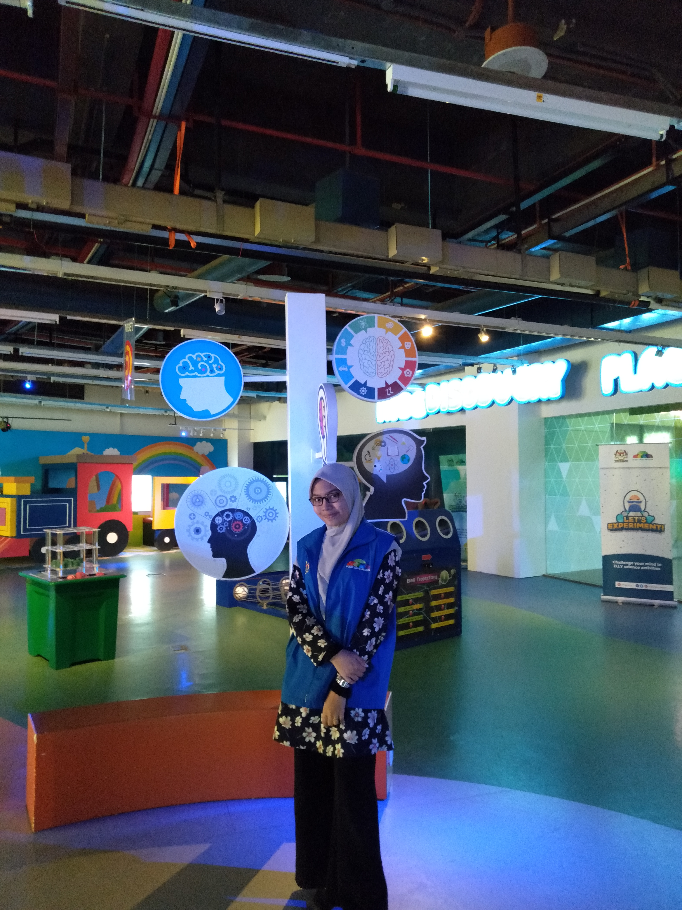 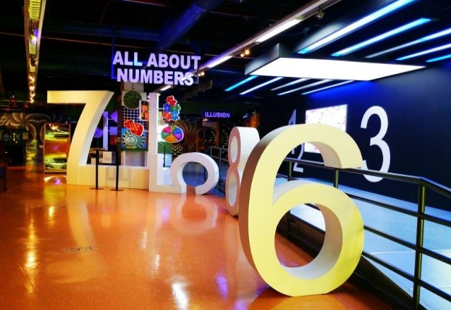
Figure 1: My picture at outside National Science Centre and in the Indoor Exhibition Gallery which is called the Eureka Gallery.
What is Eureka Gallery? Eureka Gallery is an exhibition space to challenge your mind to think creatively and innovatively and get ready to shout “Eureka!” when you successfully complete all the challenges in the Challenge Your Mind, Color and Sound, Illusion and All About Numbers zones.✨
After that, as volunteers, my experience at the National Science Center is to provide visitors with the right information about the proper use of exhibit materials.
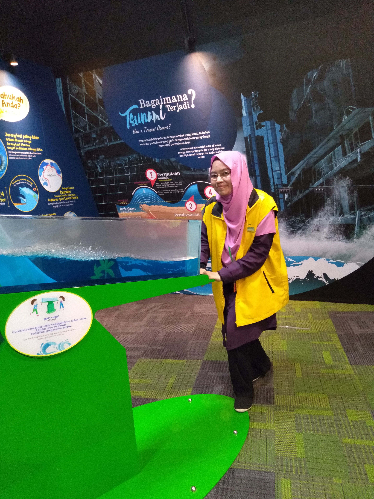
Figure 2: My picture in the Indoor Exhibition Gallery which is called Science Valley
What is Science Valley? Science Valley, the newest gallery at the National Science Center, focuses on basic theories such as nature, physics, chemistry and biology that can be used by all ages.
Officiated by the Prime Minister, Tun Dr. Mahathir Mohamad on 2 April 2019, in conjunction with the National Science Week 2019, opened the opportunity for the public to explore science in the form of hands - on, minds - on and interactive exhibitions.
In fact, the National Science Center also provides an interesting and fun simulated environment for visitors from various educational backgrounds as well as making it easier for them to understand the concepts of science presented in Science Valley.
Science Valley, which is only available on PSN, brings visitors to know and learn about the latest science issues as well as the application of science and technology in daily life.
Besides that, my experience working as a volunteer is to assist in the daily manage of the gallery and exhibition materials.
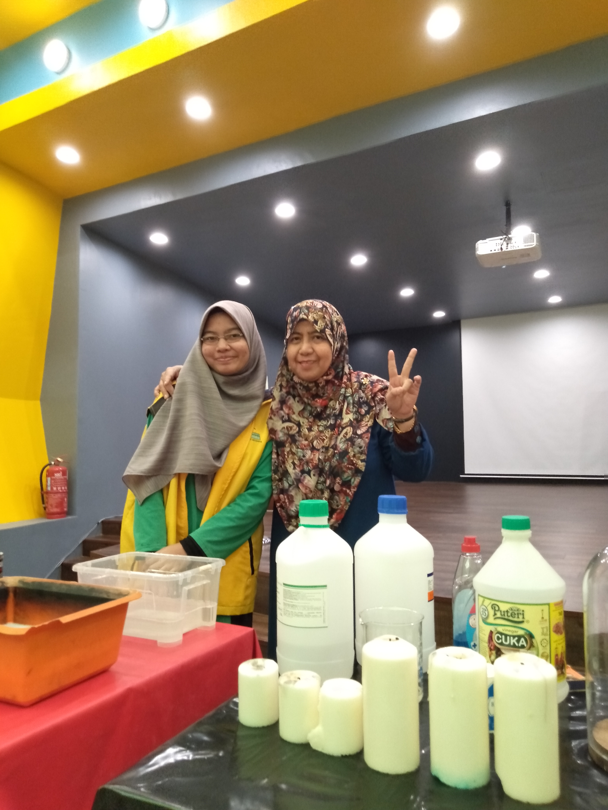 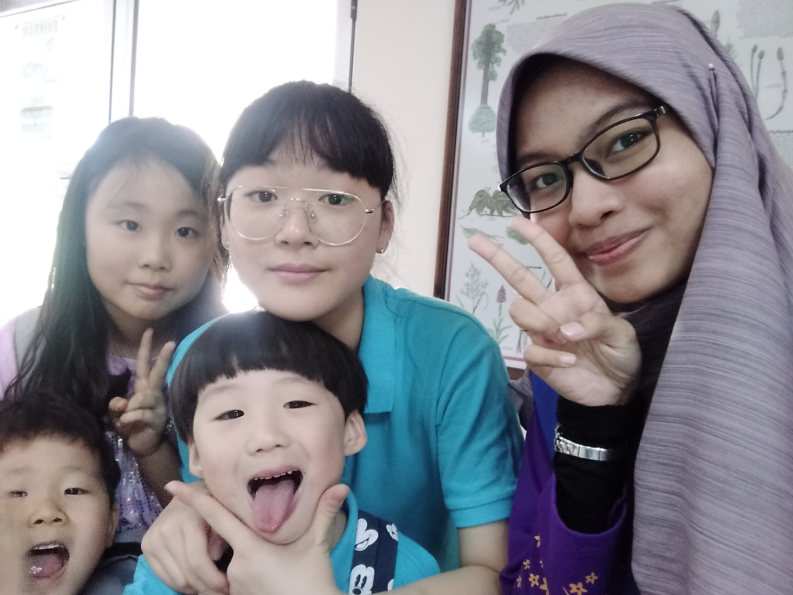
Figure 3: My picture with science officer at stage which is we called Science Show, in let's experiment place and my selfie picture with foreigner Korean student while doing experiment together.
Lastly, as pictured above, my experience working as a volunteer is assisting science officers in the management of programs or science experiments on stage.
Science Show is a stage show that displays a science experiment associated with life all day. What is Lets Experiment place? that is, the angle of science that tests the mind visitors through exciting handson activities.
 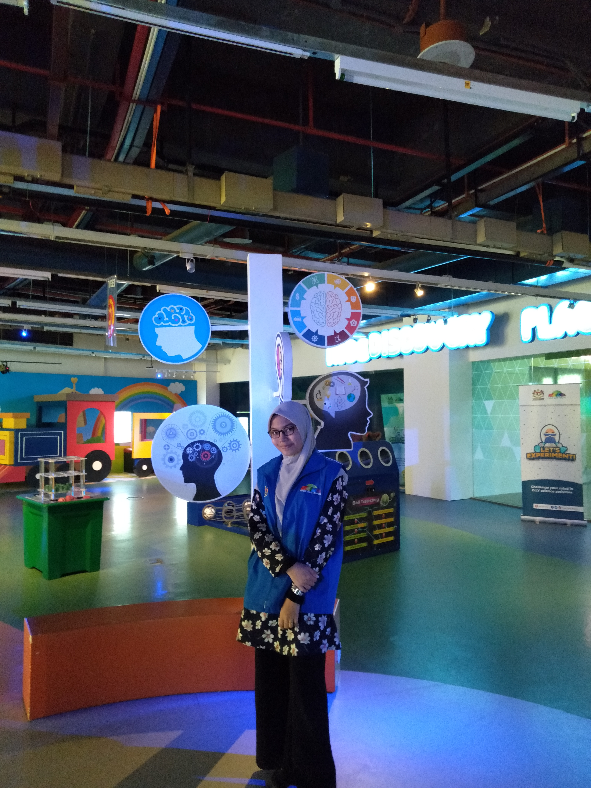 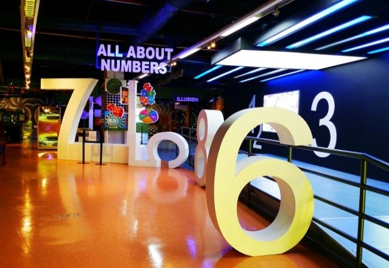
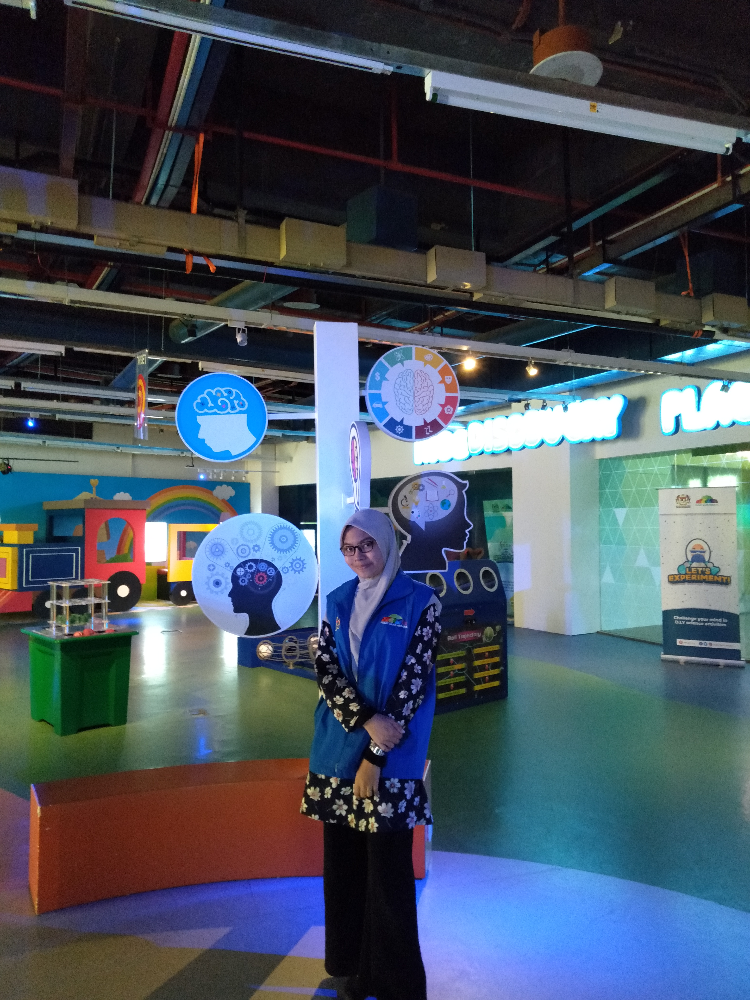 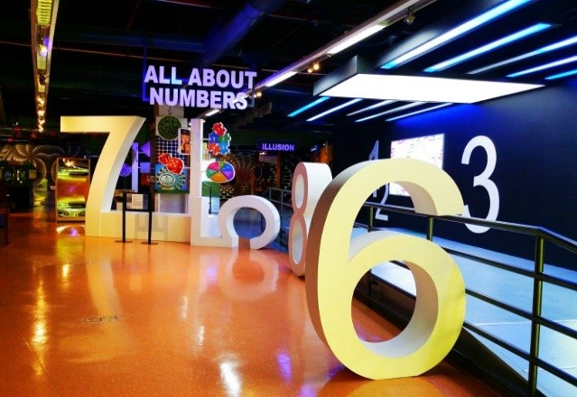

 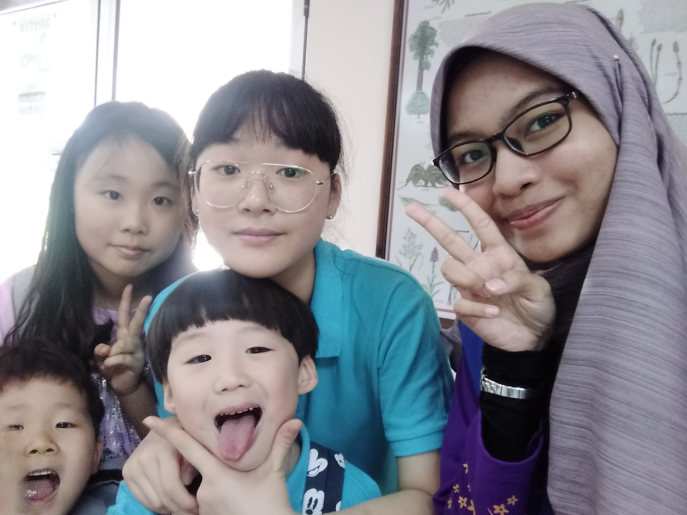
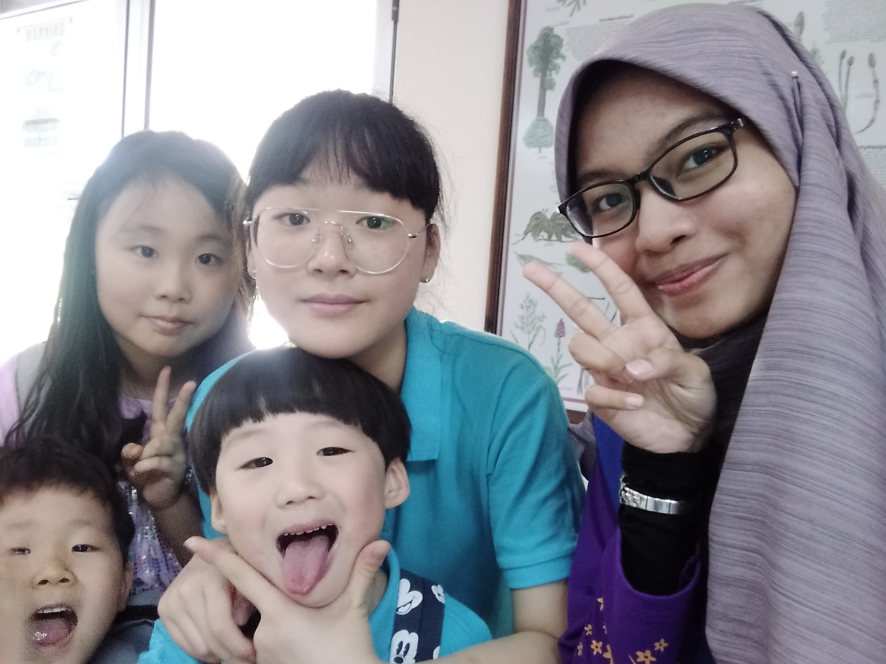